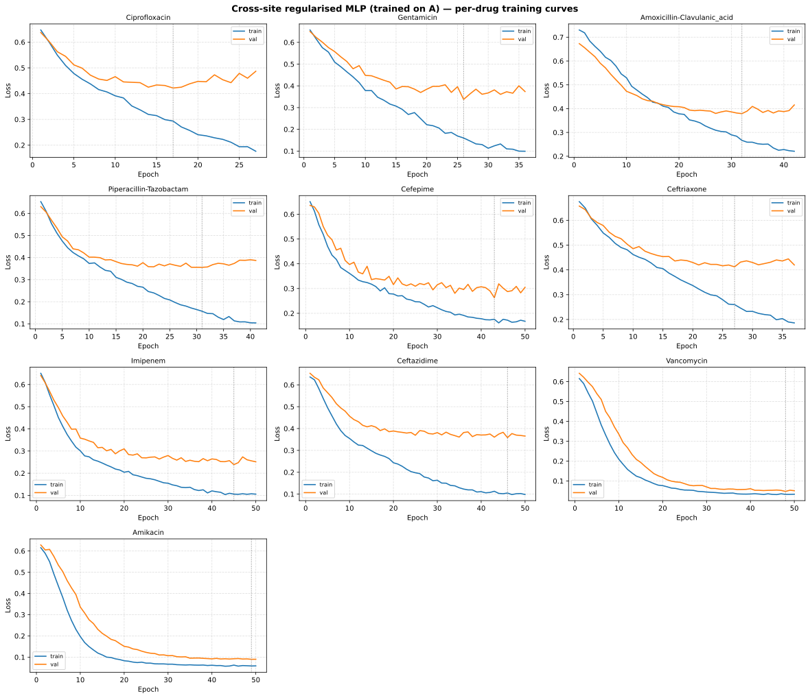
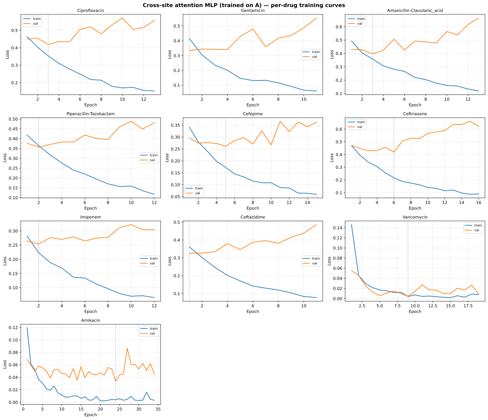

Loss-Curve and Parameter-Selection Diagnostics
Per-epoch training histories from the main cross-site notebook
(03-CrossSite-Classifier.ipynb), which trains on DRIAMS-A only and tests
on B/C/D. The regularised and attention MLP finals log train/val loss and
AUROC every epoch (track_train_metrics).
Setup
Train site: DRIAMS-A, species-stratified split 80/20, seed 42
Per-drug hyperparameters: 8×8 lr × dropout grid, candidates scored on the external A-val (see 03 — Cross-Site Classifier); the attention MLP uses its fixed configuration
Per-epoch log: train/val cross-entropy, learning rate, gradient norm, AUROC
Internal validation: 10% of the training split for Early stopping (patience 10); the reported A-val metrics use the external 20% split
Outputs:
results_cross_site/metrics_<drug>_{reg,attn}.csv
Regularised MLP


Per-epoch cross-entropy for the ten drugs trained on A (blue = train, orange = validation; both solid lines), with the best-validation epoch marked.
Drug |
Best epoch |
Epochs |
Gap at best |
Final gap |
AUROC at best |
|---|---|---|---|---|---|
Ciprofloxacin |
17 |
27 |
+0.128 |
+0.310 |
0.794 |
Gentamicin |
26 |
36 |
+0.177 |
+0.275 |
0.897 |
Amoxicillin-Clavulanic acid |
32 |
42 |
+0.112 |
+0.194 |
0.894 |
Piperacillin-Tazobactam |
31 |
41 |
+0.199 |
+0.283 |
0.872 |
Cefepime |
43 |
50 |
+0.087 |
+0.137 |
0.919 |
Ceftriaxone |
27 |
37 |
+0.152 |
+0.234 |
0.850 |
Imipenem |
45 |
50 |
+0.133 |
+0.146 |
0.943 |
Ceftazidime |
46 |
50 |
+0.254 |
+0.267 |
0.772 |
Vancomycin |
48 |
50 |
+0.015 |
+0.018 |
0.999 |
Amikacin |
49 |
50 |
+0.031 |
+0.031 |
0.936 |
Gap = validation − train cross-entropy. The regularised models train for a mean of 43 epochs (best epoch ≈ 36) and overfit after the optimum: the gap at the best epoch ranges from 0.015 (Vancomycin) to 0.254 (Ceftazidime), and reaches 0.310 at the end of training (Ciprofloxacin). Amikacin, Imipenem and Vancomycin run to the 50-epoch budget; the smallest gaps (Vancomycin, Amikacin) rest on very few resistant isolates (85 and 47 on A), so their internal AUROC is unreliable.
Attention MLP


Per-epoch cross-entropy for the ten drugs trained on A (blue = train, orange = validation; both solid lines), with the best-validation epoch marked.
Drug |
Best epoch |
Epochs |
Gap at best |
Final gap |
AUROC at best |
|---|---|---|---|---|---|
Ciprofloxacin |
3 |
13 |
+0.065 |
+0.405 |
0.786 |
Gentamicin |
1 |
11 |
-0.081 |
+0.493 |
0.883 |
Amoxicillin-Clavulanic acid |
3 |
13 |
+0.040 |
+0.546 |
0.886 |
Piperacillin-Tazobactam |
2 |
12 |
-0.008 |
+0.364 |
0.852 |
Cefepime |
5 |
15 |
+0.089 |
+0.302 |
0.922 |
Ceftriaxone |
6 |
16 |
+0.201 |
+0.532 |
0.860 |
Imipenem |
2 |
12 |
+0.030 |
+0.239 |
0.932 |
Ceftazidime |
1 |
11 |
-0.036 |
+0.409 |
0.717 |
Vancomycin |
9 |
19 |
+0.000 |
+0.001 |
1.000 |
Amikacin |
24 |
34 |
+0.030 |
+0.042 |
0.937 |
The attention models stop much earlier (mean best epoch 5.6, mean 15.6 epochs) and their final gaps reach 0.55: the fixed configuration overfits almost immediately. Amikacin (best epoch 24) and Vancomycin (best epoch 9, internal AUROC 1.000) are the exceptions.
Parameter-Selection Fragility
Drug |
03-01 |
03 (grid) |
Delta |
|---|---|---|---|
Ciprofloxacin |
0.718 |
0.778 |
-0.060 |
Gentamicin |
0.824 |
0.847 |
-0.023 |
Amoxicillin-Clavulanic acid |
0.815 |
0.825 |
-0.010 |
Piperacillin-Tazobactam |
0.798 |
0.797 |
+0.001 |
Cefepime |
0.869 |
0.873 |
-0.004 |
Ceftriaxone |
0.818 |
0.813 |
+0.005 |
Imipenem |
0.911 |
0.910 |
+0.001 |
Ceftazidime |
0.755 |
0.767 |
-0.012 |
Vancomycin |
0.929 |
0.926 |
+0.003 |
Amikacin |
0.763 |
0.738 |
+0.025 |
Nine of ten drugs agree within ±0.06, but Ciprofloxacin favours the 03 grid (-0.060) and Amikacin favours the 07 configuration (+0.025). Selecting hyperparameters on a single A validation split is therefore fragile, especially for drugs with few resistant samples.
A-Validation Does Not Predict Transfer
The correlation between A-val Balanced Accuracy and B+C+D is 0.68 across the ten drugs (this run)
Ciprofloxacin: 0.778 on A validation → 0.610 cross-site
Gentamicin: 0.847 → 0.575
Piperacillin-Tazobactam: 0.797 → 0.535
The attention MLP reaches internal AUROC 1.000 on Vancomycin and still overfits A: the internal-vs-external metric gaps show that the model-selection signal is noisy with few resistant samples
Reproducibility
The rerun (current notebook, seed 42) reproduces the originally published per-drug A-val results within ±0.013 Balanced Accuracy for nine drugs, but Amikacin differs by +0.086 (0.738 vs 0.652); cross-site B+C+D values differ by up to ~0.04 (Vancomycin 0.812 vs 0.771). The heatmaps and summary files on Cross-Site Results remain those of the original run. The differences reinforce the single-seed instability noted in the caveats.
Practical Implication
A-only loss curves confirm overfitting but do not explain the cross-site gap: models optimise well on A while transfer fails. Robust conclusions require multiple seeds and confidence intervals plus cross-site evaluation of the same model configurations, not finer hyperparameter search on a single validation split.